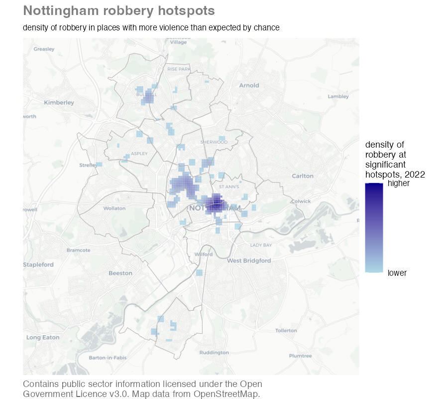
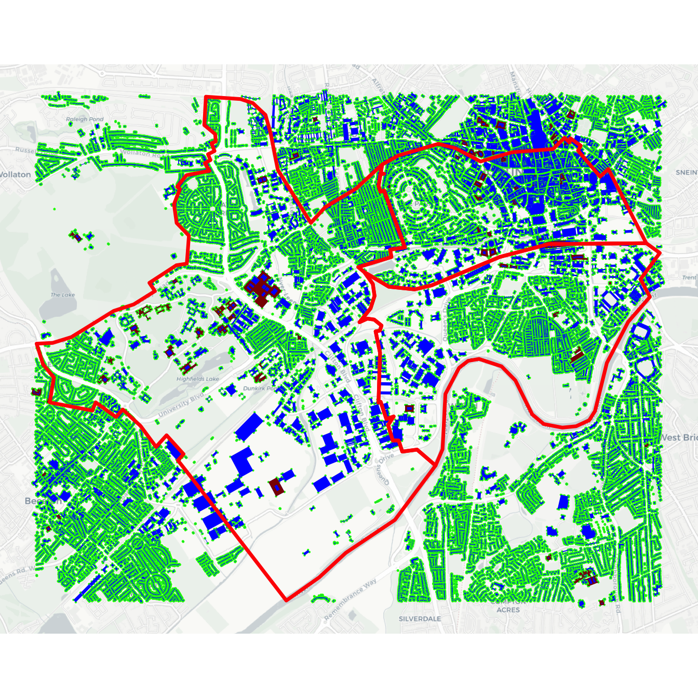
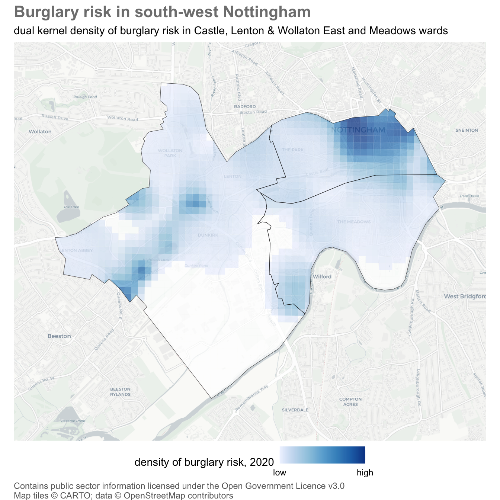
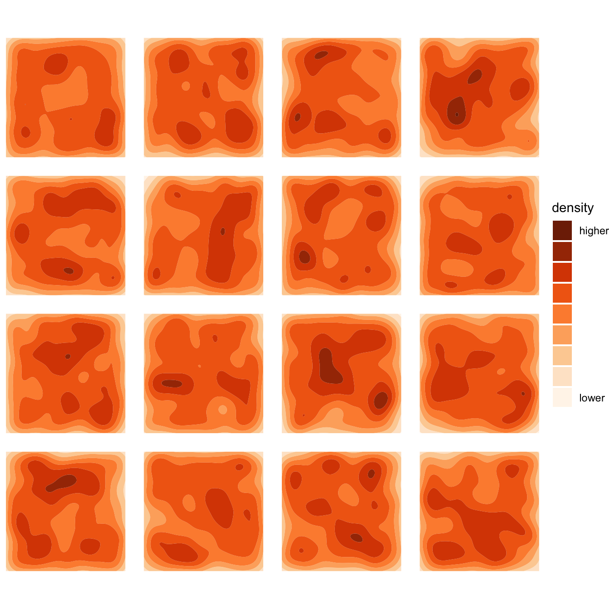
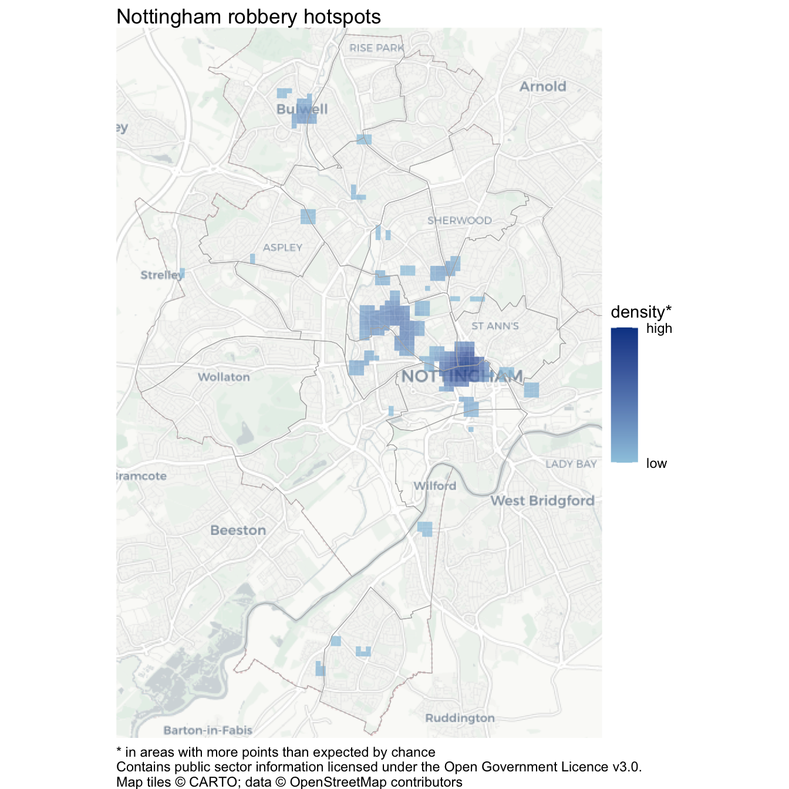
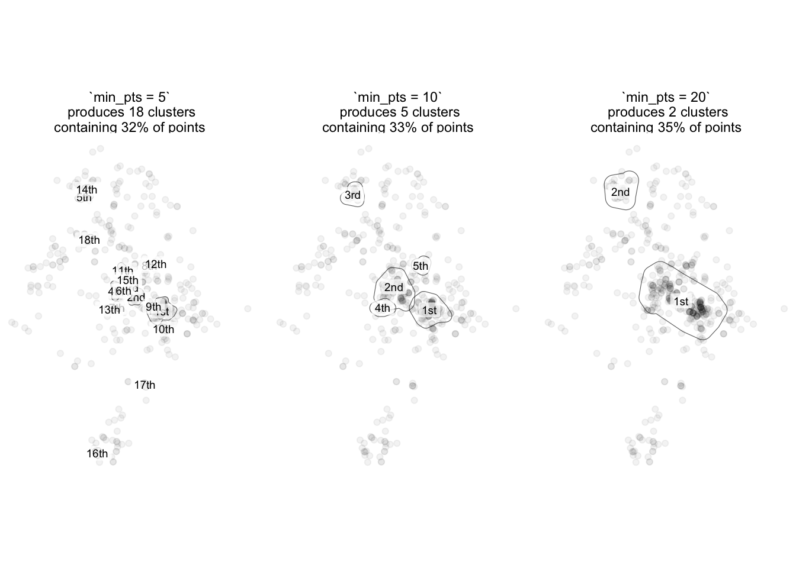
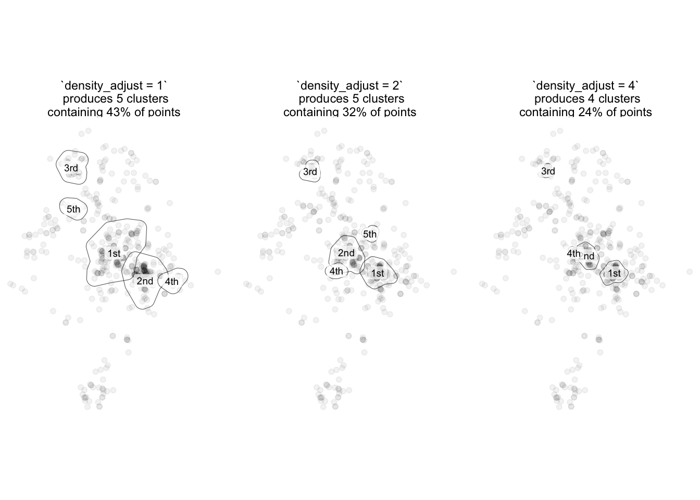
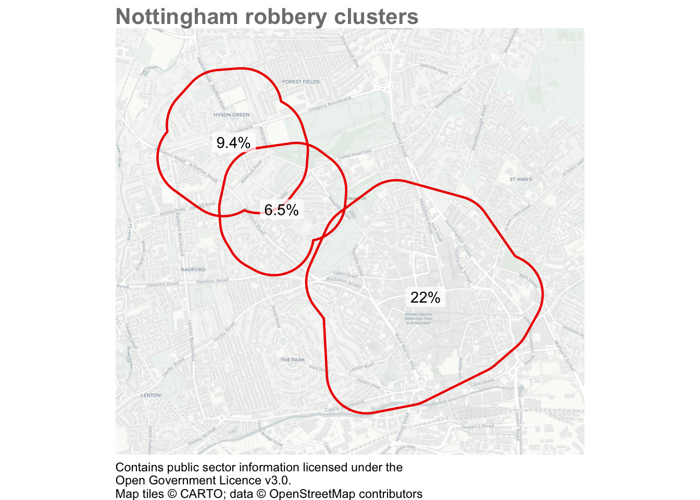
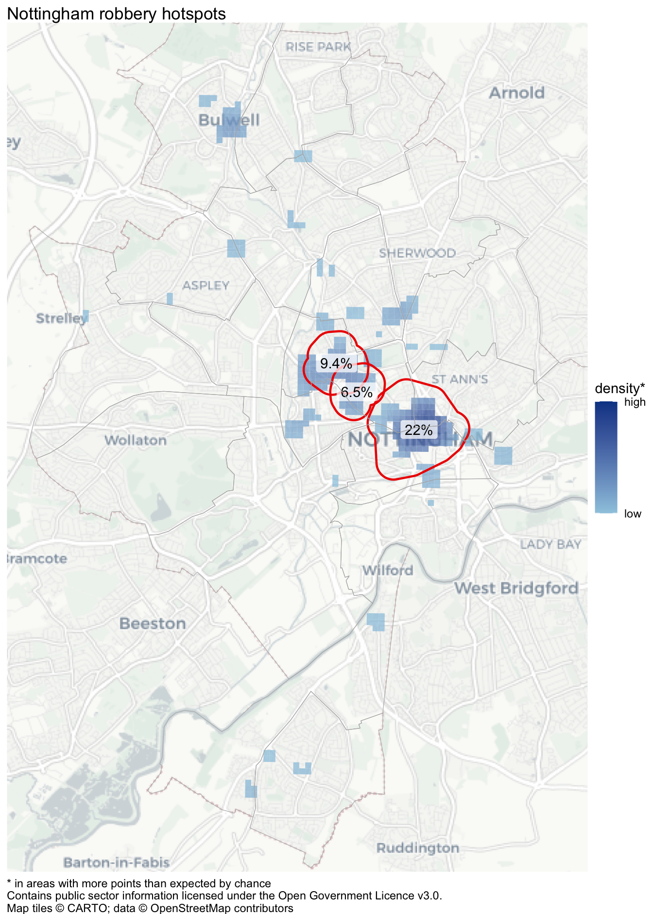

In this chapter we will learn three techniques for better understanding hotspots of crime. We will learn what a crime hotspot is and how to use R to identify hotspots and plot them on maps. We will also learn how to better understand spatial concentrations in crime risk using dual kernel density estimation.
TipBefore you start
Open Positron or – if you already have Positron open – start a new R session by clicking the Restart R (⟳) button in the Console panel. This makes sure no code you ran previously will interfere with the work you do in this chapter.
Make sure you are working in the crime mapping project workspace you created in Section 1.5. In the top-right corner of the Positron window, you should see a folder icon and the words crime_mapping. If not, click the File menu, then Open Folder … and choose the crime_mapping folder.
13.1 What is a hotspot?
Crime is heavily concentrated in several different ways. A small number of offenders commit a large proportion of crime (even though most people commit minor offences occasionally) and a small number of people are repeatedly victimised. For most types of crime, a large proportion of crime occurs in a small number of places. A hotspot is a specific location or small area where an unusual amount of criminal activity occurs.
Crime hotspots can occur in several different forms. Watch this video to understand why hotspots are important in understanding and responding to crime.
Some places are chronic hotspots – they have more crime than surrounding areas over a sustained period (which may appear to be permanent). Chronic hotspots are often generated by a facility that draws vulnerable people into an area, such as a tourist attraction that draws crowds of people who are vulnerable to pickpocketing. Other places are acute hotspots, in which crime increases in a place that previously experienced no or few crimes. This may be the result of some change in the environment or how it’s managed, such as new management that ignores drug dealing at a bar that the previous owners would have not tolerated.
When analysing hotspots, it is best to focus on small areas such as an apartment block, a shopping centre, a park or a single street. Focusing on smaller areas is important because resources to respond to crime are almost always limited, so it is important that those resources are directed where the problem is worst.
Analysing larger areas, such as a neighbourhood or a police sector, is much more difficult because larger areas are always made up of many smaller areas, each of which might be quite different from one another. This means that the factors causing one street to be a hotspot might be quite different from the factors that make another street in the same district into a hotspot. Conflating different problems with different causes makes it much harder to find effective ways to reduce crime in any one place.
These difficulties can be avoided (at least partly) by keeping hotspots small: in an urban area, a useful rule of thumb is that you should be able to stand in the middle of a hotspot and see the whole hotspot area.
Being able to identify hotspots using crime mapping is important because it forms a vital first step in many place-focused responses to crime. As an example of this, watch this video about how police in Philadelphia worked with researchers to use crime mapping to identify where to deploy foot patrols to reduce crime.
In this chapter we will learn how to make maps that could be useful in identifying and responding to hotspots of crime. Among other maps, we will create this map showing hotspots of robbery in Nottingham, England.

In this chapter, we will learn how to:
understand what crime hotspots are and why analysts usually study them at small geographic scales;
distinguish crime density from crime risk;
identify a suitable population at risk for a particular type of crime;
estimate and map crime risk using dual kernel density estimation;
distinguish apparent concentrations from statistically significant hotspots; and
identify and map significant spatial clusters using the Getis-Ord Gi* statistic.
You will complete two analyses in this chapter. Save the dual-KDE analysis in chapter_13a.R and the Gi* analysis in chapter_13b.R, both inside the R folder of the workspace you created in Section 1.5. Remember to run each block of code that you add to a script by pressing .
QuizCrime hotspots
Which one of these statements is true?
13.2 Showing the density of risk
In Chapter 9 we learned how to produce maps showing the incidence rate of crime by dividing the number of crimes by a measure of the population at risk of being targeted. We will often only have population estimates for areas, such as census estimates of the number of people living in an area. But for some crimes we have access to estimates of the people (or, more often, objects) at risk of being a target of a particular crime. In these cases, we can produce better maps of the risk of crime in different areas by producing a dual KDE map that shows the density of crime risk in different places.
To create a dual KDE map, we must estimate the density of crime and compare it to an estimate the density of the population at risk. Since an incidence rate is calculated as the number of crimes divided by the number of people or objects at risk, we can calculate the density of risk by dividing the density of crime estimated for each cell in the grid by the density of population estimated for the same cell. The hotspot_dual_kde() function from the sfhotspot package does this for us.
To illustrate making a dual KDE map, we will use reports of burglaries in three wards in Nottingham in 2020. Since the essential element of the crime of burglary in England is that an offender enters a building as a trespasser in order to steal something, the best measure of the population at risk of burglary is the number of buildings in each area (the definition of burglary is more complicated than this, but we don’t need to worry about that here).
TipWhat’s the difference between theft, burglary and robbery?
Definitions of crime vary between countries. But theft (sometimes called larceny) is usually defined as the act of dishonestly taking property belonging to another person while intending to keep (not just borrow) the property or treat it as the offender’s own. Shoplifting, bike theft, car theft and pickpocketing are all types of theft.
Burglary and robbery are both special types of theft. A burglary is a theft committed inside a building that the offender does not have the owner’s permission to be in. The most obvious type of burglary is when an offender breaks into a victim’s home and steals valuables from inside. But burglary can also be committed in non-residential buildings: some types of business are frequent targets of burglary.
A robbery is a theft in which the offender uses violence or the threat of violence against the victim. It is important to remember that burglary and robbery are separate crimes. Since robbery requires (the threat of) violence against a person, robbery risk is usually described in terms of the number of robberies for a certain number of people. Burglary, on the other hand, can only take place in a building, so burglary risk is usually described in terms of the number of burglaries for a certain number of premises.
Burglary is a good example of why the routine activities approach to thinking about crime that we introduced in Chapter 1 emphasises thinking about targets of crime rather than focusing only on crime victims. In the case of burglary, one person might be the owner of a large number of buildings (e.g. a farm with lots of out-buildings) or lots of people might own a single building (such as a house converted into flats). By thinking about the targets that are attacked by offenders, we can identify that burglary rates should be calculated based on buildings rather than, for example, residential population. Note that if our crime data only included residential burglaries then we would want to use residential buildings as our denominator, but in this case we have data for all burglaries, both residential and non-residential.
13.2.1 Data wrangling
Before we can create our dual KDE layer, we have to complete some data wrangling. We will extract the boundaries for the wards of interest from a dataset of boundaries for all wards in Nottingham using filter() as we have done previously. To extract only the burglaries occurring in those three wards from a dataset of all burglaries in Nottingham, we will use hotspot_clip(). We will also transform both datasets to use the British National Grid (EPSG:27700), a projected CRS whose coordinates are measured in metres. Using a projected CRS makes it easy to specify a grid-cell size in metres. See Section 6.2.1 for how to choose an appropriate projected CRS.
Open chapter_13a.R in the R folder of your crime_mapping workspace. Add this code to download the original datasets into data/raw, load the local copies and prepare them for analysis.
chapter_13a.R
# Load packagespacman::p_load(here, httr2, osmdata, sf, sfhotspot, tidyverse)# Download the original datarequest("https://mpjashby.github.io/crimemappingdata/nottingham_wards.gpkg") |>req_perform(path =here("data", "raw", "nottingham_wards.gpkg"))request("https://mpjashby.github.io/crimemappingdata/nottingham_burglary.csv.gz") |>req_perform(path =here("data", "raw", "nottingham_burglary.csv.gz"))# Load dataset of wards in Nottingham and choose the ones we wantwards <-here("data", "raw", "nottingham_wards.gpkg") |>read_sf() |>st_transform("EPSG:27700") |>filter(ward_name %in%c("Castle", "Lenton & Wollaton East", "Meadows"))# Load dataset of burglaries and keep only those in the wards of interestburglaries <-here("data", "raw", "nottingham_burglary.csv.gz") |>read_csv() |>st_as_sf(coords =c("longitude", "latitude"), crs ="EPSG:4326") |>st_transform("EPSG:27700") |>hotspot_clip(wards)
We do not have a source of open data for all the buildings in Nottingham, so we will use the osmdata package to get the locations of buildings from OpenStreetMap (OSM). You may remember from Chapter 12 that to do this we need to know which key (and possibly value) the OSM database uses for storing the locations of buildings. The OSM feature key for a building is ‘building’ and it is not necessary to specify a value (since we want to capture all types of building). The osmdata package expects data to use the WGS84 coordinate reference system, so we must also make sure any data sources we use are projected using that system (EPSG:4326).
Add this code to your R script and run it. The first time you run the code, it downloads building data from OpenStreetMap and saves a copy in data/processed. On later runs, it loads that saved copy so the analysis is faster and does not change if OpenStreetMap is updated.
chapter_13a.R
buildings_file <-here("data", "processed", "nottingham_buildings.rds")if (file.exists(buildings_file)) {# If buildings data has already been downloaded, load it from the saved copy nottingham_buildings <-read_rds(buildings_file)} else {# If buildings data has not been downloaded, get it from OpenStreetMap and# save a copy nottingham_buildings <- wards |># Transform ward boundaries to CRS needed by `opq()`st_transform("EPSG:4326") |># Calculate bounding boxst_bbox() |># Set up OSM queryopq(timeout =120) |># Add type of feature to fetchadd_osm_feature(key ="building") |># Fetch features from OSM databaseosmdata_sf()write_rds(nottingham_buildings, buildings_file)}
TipOverpass API errors
The Overpass API used by osmdata_sf() is a shared online service. If you see an error such as HTTP 429 Too Many Requests or HTTP 504 Gateway Timeout, wait a few minutes and run the query again. Once the query succeeds, the saved copy means you will not need to contact the service again for this analysis.
NoteWhat does if (file.exists(...)) do?
Almost all programming languages have a way of only executing code in certain circumstances. This is usually in the form of an if statement. If the condition in the parentheses after if is true, the code inside the first pair of curly braces is run. If the condition in the parentheses after if is false, the code inside the second pair of curly braces (after the word else) is run.
In this case, the code in the parentheses (file.exists(...)) checks whether a file already exists on the computer the code is running on. If it does, the code inside the parentheses evaluates to TRUE and the code inside the first pair of curly braces is run to load the data in the existing file into R. If the file does not exist, the code inside the parentheses evaluates to FALSE and the code inside the second pair of curly braces is run to download the data from OpenStreetMap and save a copy.
There are many other ways to use if statements in R, but we won’t need to use any of them in this book. If you are interested in learning more about if statements, see the R for Data Science book by Hadley Wickham and Garrett Grolemund.
R Console
nottingham_buildings
Object of class 'osmdata' with:
$bbox : 52.9173362670705,-1.21712477980417,52.9596833099217,-1.13020878819132
$overpass_call : The call submitted to the overpass API
$meta : metadata including timestamp and version numbers
$osm_points : 'sf' Simple Features Collection with 169510 points
$osm_lines : 'sf' Simple Features Collection with 48 linestrings
$osm_polygons : 'sf' Simple Features Collection with 31690 polygons
$osm_multilines : 'sf' Simple Features Collection with 2 multilinestrings
$osm_multipolygons : 'sf' Simple Features Collection with 73 multipolygons
Looking at the nottingham_buildings object, we can see that OSM contains data on buildings stored as points, polygons and multipolygons (we can ignore the few linestrings tagged as buildings, since it doesn’t make sense for a building to be represented as a line rather than a point or a polygon).
TipWhat is a multipolygon?
OpenStreetMap stores features in several different ways. The most basic types are points, lines and polygons. But there are also multipolygons (and multilines). These are features that represent complex structures such as clusters of buildings that are separate structures but are related to each other. For example, a hospital with several buildings might be represented in OpenStreetMap as a single multipolygon feature. A multipolygon might also be used to represent complex building shapes such as buildings with a courtyard or light well in the middle.
Let’s create a simple map of the results produced by osmdata_sf(), comparing them to the buildings shown on a base map to check that OSM has reasonable coverage of the buildings in these three wards. This code uses the pluck() function from the purrr package (part of the tidyverse) to extract the different elements from the nottingham_buildings object.
R Console
# Initiate map and add building features stored as pointshotspot_map(pluck(nottingham_buildings, "osm_points"),basemap_type ="cartolight",colour ="green",size =0.1) +# Add building features stored as polygonsgeom_sf(data =pluck(nottingham_buildings, "osm_polygons"),colour =NA,fill ="blue" ) +# Add building features stored as multi-polygonsgeom_sf(data =pluck(nottingham_buildings, "osm_multipolygons"),colour =NA,fill ="darkred" ) +# Add ward boundaries so we can see how complete OSM data is within those# wardsgeom_sf(data = wards, colour ="red", fill =NA, linewidth =1.25)

Importantosmdata_sf() returns data for a bounding box
Remember that osmdata_sf() gets OSM data for the area covered by the bounding box of the input feature, not the feature boundaries. This means some of the buildings returned by the code above will be outside the wards we are interested in. We will deal with that shortly.
It looks like almost all the streets in the three wards we are interested in are lined with buildings in the OSM data, which is what we would expect of streets in an urban area. There are some streets without buildings in the top-left of the map, but these streets are outside our three wards so this does not matter.
We can also see from this map that the 169,510 point features in the OSM data (shown as green dots on the map) typically represent the corners of buildings that are also represented as polygons, so we know we can ignore the points layer within the OSM data.
Since the hotspot_dual_kde() function works on points, we need to merge the polygon and multipolygon layers, then convert the combined layer to points by calculating the centroid of each building. We will transform the building data to use the British National Grid before calculating centroids. Calculating centroids in an appropriate projected coordinate system is more reliable than calculating them from longitude and latitude coordinates.
Since we are only interested in buildings in three particular wards, we can also remove any buildings outside those wards using hotspot_clip(). Both the building centroids and the wards object will use the British National Grid.
Add this code to the chapter_13a.R file and run it.
chapter_13a.R
# Extract polygon/multipolygon layers and combine them into a single objectnottingham_building_centroids <-bind_rows(pluck(nottingham_buildings, "osm_polygons"),pluck(nottingham_buildings, "osm_multipolygons")) |># Transform to the same CRS as the `wards` objectst_transform("EPSG:27700") |># Convert polygons to pointsst_centroid() |># Remove any points outside the wards of interesthotspot_clip(wards)
Warning: st_centroid assumes attributes are constant over geometries
Removed 18,559 rows (58.4% of original rows) from `data`
TipWhat does the warning st_centroid assumes … mean?
You might have seen a warning saying st_centroid assumes attributes are constant over geometries of x. You will see this warning when you use the st_centroid() function. It is there to remind you that columns in the original data (which the SF package refers to as the attributes associated with each spatial feature) refer to the polygon as a whole, but in the object produced by st_centroid() it will appear that the columns relate to the centroid point. In many cases this will not be a problem, but it could expose you to the ecological fallacy so it is sometimes useful to be reminded.
13.2.2 Calculating dual kernel density
We now have the object burglaries that contains the locations of each burglary in the three Nottingham wards that we are interested in, and the object nottingham_building_centroids that contains the centroids of each building in those three wards. We can use these layers to estimate the density of burglaries and buildings, then combine these to estimate the density of burglary risk.
hotspot_dual_kde() works in the same way as hotspot_kde(), except that it requires two datasets. In this case, that means one dataset of crime locations and one dataset of building locations. hotspot_dual_kde() will set the cell size and bandwidth automatically, but we can set them manually using the cell_size, bandwidth_adjust and grid arguments in the same way we have done for hotspot_kde(). In this case, we will use the hotspot_grid() helper function to create a grid based on the boundaries of the wards we are interested in. All the spatial objects we are going to use here have coordinates specified using the British National Grid because we have already transformed them, so we do not need to do any transformation here.
chapter_13a.R
# Estimate density of burglary riskburglary_risk <-hotspot_dual_kde( burglaries, nottingham_building_centroids,bandwidth_adjust =0.25,grid =hotspot_grid(wards, cell_size =100),quiet =TRUE) |>hotspot_clip(wards)
Removed 100 rows (6.2% of original rows) from `data`
The burglary_risk object looks like this:
R Console
head(burglary_risk)
Simple feature collection with 6 features and 2 fields
Geometry type: POLYGON
Dimension: XY
Bounding box: xmin: 454960.4 ymin: 335859 xmax: 455261.5 ymax: 336009
Projected CRS: OSGB36 / British National Grid
# A tibble: 6 × 3
n kde geometry
<dbl> <dbl> <POLYGON [m]>
1 0 NaN ((455061.5 335909, 455061.5 335881.3, 455039.5 335909, 455061.5 3…
2 0 NaN ((455061.5 335909, 455148.6 335909, 455079.1 335859, 455061.5 335…
3 0 NaN ((454961.5 336009, 454961.5 336007.6, 454960.4 336009, 454961.5 3…
4 0 NaN ((454961.5 336009, 455061.5 336009, 455061.5 335909, 455039.5 335…
5 0 0 ((455061.5 336009, 455161.5 336009, 455161.5 335918.3, 455148.6 3…
6 0 0 ((455161.5 336009, 455261.5 336009, 455261.5 335990.2, 455161.5 3…
NoteWhat does NaN mean?
You might recall from earlier in this chapter that by default, the value of the kde column in the object produced by hotspot_dual_kde() is calculated by dividing the density of burglary in each grid cell by the density of buildings in the same grid cell. There are two cases where this will produce a result that is not a finite number:
If, for a particular cell, the density of burglaries and density of buildings are both zero, dividing one by the other will produce the result NaN, for ‘not a number’.
If the density of burglaries is greater than zero but the density of buildings is exactly zero, the result will be Inf, for ‘infinite’.
Fortunately, hotspot_map() will deal with these non-finite values, so we don’t need to worry about them.
We can plot the estimate of the density of burglary risk using hotspot_map(). By controlling for the density of buildings, this map shows us where building owners on average face the highest risk of being burgled. This might be useful in working out, for example, which building owners should be offered visits from a crime-prevention advisor or funding to install crime-prevention measures.
Add this code to your script file and run it to produce a map:
chapter_13a.R
hotspot_map( burglary_risk,basemap_type ="cartolight",caption =str_glue("Contains public sector information licensed under the Open ","Government Licence v3.0" )) +# Add ward boundariesgeom_sf(data = wards, fill =NA) +labs(title ="Burglary risk in south-west Nottingham",subtitle =str_glue("dual kernel density of burglary risk in Castle, Lenton & Wollaton ","East and Meadows wards" ),fill ="density of burglary risk, 2020" ) +theme(legend.position ="bottom",plot.caption =element_text(colour ="grey40"),plot.subtitle =element_text(margin =margin(t =6, b =6)),plot.title =element_text(colour ="grey50", face ="bold", size =16) )

Save chapter_13a.R by pressing . To check that the analysis is reproducible, restart R using the Restart R (⟳) button in Positron’s R Console panel, then run the script from beginning to end. Keep the script in the R folder, the original downloads in data/raw and the saved OpenStreetMap data in data/processed.
Your complete chapter_13a.R dual-KDE script should now look like this:
chapter_13a.R
# This script produces a dual kernel-density map of burglary risk in three# wards in Nottingham, England# Load packagespacman::p_load(ggspatial, here, httr2, osmdata, sf, sfhotspot, tidyverse)# LOAD DATA --------------------------------------------------------------------# Download the original datarequest("https://mpjashby.github.io/crimemappingdata/nottingham_wards.gpkg") |>req_perform(path =here("data", "raw", "nottingham_wards.gpkg"))request("https://mpjashby.github.io/crimemappingdata/nottingham_burglary.csv.gz") |>req_perform(path =here("data", "raw", "nottingham_burglary.csv.gz"))# Load and prepare ward boundarieswards <-here("data", "raw", "nottingham_wards.gpkg") |>read_sf() |>st_transform("EPSG:27700") |>filter(ward_name %in%c("Castle", "Lenton & Wollaton East", "Meadows"))# Load and prepare burglary locationsburglaries <-here("data", "raw", "nottingham_burglary.csv.gz") |>read_csv() |>st_as_sf(coords =c("longitude", "latitude"), crs ="EPSG:4326") |>st_transform("EPSG:27700") |>hotspot_clip(wards)# GET BUILDING DATA ------------------------------------------------------------buildings_file <-here("data", "processed", "nottingham_buildings.rds")if (file.exists(buildings_file)) { nottingham_buildings <-readRDS(buildings_file)} else { nottingham_buildings <- wards |>st_transform("EPSG:4326") |>st_bbox() |>opq(timeout =120) |>add_osm_feature(key ="building") |>osmdata_sf()saveRDS(nottingham_buildings, buildings_file)}# WRANGLE DATA -----------------------------------------------------------------nottingham_building_centroids <-bind_rows(pluck(nottingham_buildings, "osm_polygons"),pluck(nottingham_buildings, "osm_multipolygons")) |>st_transform("EPSG:27700") |>st_centroid() |>hotspot_clip(wards)burglary_risk <-hotspot_dual_kde( burglaries, nottingham_building_centroids,bandwidth_adjust =0.25,grid =hotspot_grid(wards, cell_size =100),quiet =TRUE) |>hotspot_clip(wards)# PLOT MAP ---------------------------------------------------------------------hotspot_map( burglary_risk,basemap_type ="cartolight",caption =str_glue("Contains public sector information licensed under the Open ","Government Licence v3.0" )) +# Add ward boundariesgeom_sf(data = wards, fill =NA) +labs(title ="Burglary risk in south-west Nottingham",subtitle =str_glue("dual kernel density of burglary risk in Castle, Lenton & Wollaton ","East and Meadows wards" ),fill ="density of burglary risk, 2020" ) +theme(legend.position ="bottom",plot.caption =element_text(colour ="grey40"),plot.subtitle =element_text(margin =margin(t =6, b =6)),plot.title =element_text(colour ="grey50", face ="bold", size =16) )
QuizDual kernel density
Which one of these statements is true?
Why do we usually clip the result of hotspot_dual_kde() using hotspot_clip()?
13.3 Finding hotspots using Gi*
We have explored how to produce a better map of the density of crime in different areas. But how do we know which areas count as hotspots and which don’t?
Each of the 16 density maps below shows density estimates based on 1,000 points placed completely at random on 16 different maps. There are no real patterns in the data except for statistical noise. Nevertheless, the KDE process makes it appear that there are patterns in the data.

This is a problem because we might end up responding to an apparent problem that is nothing but an artefact of the random variation that we expect to see in many processes, including crime.
If the police and other agencies looked at these patterns and did nothing in response to them, it is likely that over time some of the areas with high density would become areas of low density, and vice versa. However, the harm caused by crime means it is very hard for agencies to justify sitting back and do nothing to respond to it – many people would consider it immoral to do so. So police and other agencies are very likely to try to respond to crime patterns, even if those patterns might have occurred by chance. This is very frustrating, because if we were to go back and look at the same data in a few months time it is very likely that the apparent hotspots would have shifted to somewhere different, making all the effort spent in responding to crime seem worthless (which, if the apparent patterns were actually artefacts of the KDE process, it may have been).
You might be thinking it’s better safe than sorry, and that police should respond to the apparent patterns just in case they represent real concentrations in crime. But police resources are always scarce, so responding to one problem in one place means not responding to another problem in another place. This is known as the opportunity cost of acting: if police focus their limited resources in one area, that comes at the cost of not being able to deploy those resources in other areas that might need it more.
We can try to avoid this problem of wasting resources responding to random variation in crime by determining whether the number of crimes in an area is more than the greatest number we would reasonably expect if there were no actual patterns in the data (if you have studied statistics before, you might recognise this as a description of a null hypothesis, but you don’t need to have studied statistics to apply the techniques in this book).
To determine if the number of crimes in each area is greater than we would expect by chance, we can use the Getis-Ord Gi* statistic (also called the local G statistic, spoken out-loud as the G-I star statistic). If the Gi* statistic for an area is greater than a certain value, we can say that the number of crimes in that area is higher than we would expect if there were no patterns in the data. We will call areas with more crimes than we would expect by chance as hotspots.
We can calculate the Gi* statistic using the hotspot_gistar() function from the sfhotspot package. This works in a similar way to the hotspot_kde() function, in that it takes an SF object of the locations of crimes and returns an SF object with a grid of cells, along with the Gi* value for each grid cell. Like hotspot_kde(), hotspot_gistar() will choose default values for several ways in which we could fine-tune the calculation of the Gi* statistic, but we could override these defaults if we wanted to.
Create a new file called chapter_13b.R in the R folder of your crime_mapping workspace as usual.
In this example, we will find the hotspots of robbery in Nottingham in 2020, based on a grid of 100-metre cells. We will store this in an object called robbery, transform it to use the British National Grid coordinate system (so we can specify the cell size in metres) and then use the resulting object to calculate the Gi* values.
<httr2_response>
GET https://mpjashby.github.io/crimemappingdata/nottingham_robbery.csv.gz
Status: 200 OK
Content-Type: application/gzip
Body: On disk '/Users/mattashby/Documents/Crime Mapping Book/data/raw/nottingham_robbery.csv.gz' (6316 bytes)
<httr2_response>
GET https://mpjashby.github.io/crimemappingdata/nottingham_wards.gpkg
Status: 200 OK
Content-Type: application/octet-stream
Body: On disk '/Users/mattashby/Documents/Crime Mapping Book/data/raw/nottingham_wards.gpkg' (118784 bytes)
Rows: 555 Columns: 5
── Column specification ────────────────────────────────────────────────────────
Delimiter: ","
chr (2): location, lsoa_code
dbl (2): longitude, latitude
date (1): month
ℹ Use `spec()` to retrieve the full column specification for this data.
ℹ Specify the column types or set `show_col_types = FALSE` to quiet this message.
Instead of using head() to view the first few rows of the object we have just created, let’s use the slice_sample() function from the dplyr package to return a random sample of rows from that object:
The robbery_gistar object contains one row for each cell in a grid of cells covering the area of the robbery data. Each row has four columns:
n shows the number of robberies that occurred in that grid cell,
kde shows the density of robberies in that cell,
gistar shows the Gi* value for that cell, and
pvalue shows the \(p\)-value for that cell.
The Gi* statistic is an example of a more general group of statistics called \(Z\)scores. Statisticians and data analysts compare the \(Z\) scores produced by statistical procedures such as hotspot_gistar() to reference values to decide if a \(Z\) score is large enough to be treated as statistically significant, i.e. if it is large enough to conclude that it is larger than we would expect if there were no actual patterns in the data. Deciding on the right reference value to compare a \(Z\) score to can be difficult because of what’s known as the multiple comparison problem (which we don’t need to go into detail about). Fortunately, the values in the pvalue column have already been automatically adjusted to take account of the multiple comparison problem, so we can interpret the \(p\)-values instead of interpreting the Gi* statistic directly.
ImportantClip data before calculating Gi* values
Since Gi* is a relative measure, if you want to produce a map that shows only a part of the area covered by your data (for example you have data for a county but want to produce a map showing only a town within that county), you should clip the data to the area of interest before calculating the Gi* values, as well as clipping afterwards if necessary. This is because if you calculate the Gi* values for a large area and then clip the results to a smaller area, the Gi* values will be influenced by the large areas with no crime and all of the smaller area is likely to be identified as a hotspot.
By convention, \(p\)-values are considered to be significant if they are less than 0.05. So if \(p<0.05\), we can say that the local concentration of robberies in a given grid cell and its neighbours is unlikely to have occurred by chance. Values of Gi* greater than zero indicate cells with more robberies than expected and values of Gi* less than zero indicate cells with fewer robberies than expected. We can combine these two values to find cells with significantly more robberies than expected by chance, which are those cells for which \(Z>0\) and \(p<0.05\).
By default, if we apply the function hotspot_map() to a result produced by hotspot_gistar(), the map will show only those grid cells with a Gi* value that is significant (i.e. \(p<0.05\)). However, the default settings also mean that the map will show cells that are significant hotspots (i.e. \(Z>0\)) and cells that are significant coldspots (i.e. \(Z<0\)). In crime mapping we are generally only interested in the hotspots rather than the coldspots. To show only significant hotspots, we can use the hotspot_map() argument sign = "hot".
Let’s make a map to see what the significant robbery hotspots look like:
R Console
hotspot_map( robbery_gistar,basemap_type ="cartolight",sign ="hot",caption =str_glue("Contains public sector information licensed under the Open ","Government Licence v3.0." )) +# Add ward boundariesgeom_sf(data = nottingham_wards, colour ="grey70", fill =NA) +labs(title ="Nottingham robbery hotspots")

This map could be useful for police officers deciding where to conduct anti-robbery patrols, because it not only shows the areas with the highest density of robberies but only shows those areas if there are more robberies than we would expect by chance. This makes it more likely that officers won’t waste time chasing apparent patterns that are actually the result of random variation.
Save chapter_13b.R by pressing . Your complete chapter_13b.R Gi* script should now look like this:
chapter_13b.R
# This script produces a map of significant robbery hotspots in Nottingham,# England# Load packagespacman::p_load(ggspatial, here, httr2, sf, sfhotspot, tidyverse)# LOAD DATA --------------------------------------------------------------------# Download the original datarequest("https://mpjashby.github.io/crimemappingdata/nottingham_robbery.csv.gz") |>req_perform(path =here("data", "raw", "nottingham_robbery.csv.gz"))request("https://mpjashby.github.io/crimemappingdata/nottingham_wards.gpkg") |>req_perform(path =here("data", "raw", "nottingham_wards.gpkg"))# Load data and transform to British National Grid so distances are in metresrobbery <-here("data", "raw", "nottingham_robbery.csv.gz") |>read_csv() |>st_as_sf(coords =c("longitude", "latitude"), crs ="EPSG:4326") |>st_transform("EPSG:27700")nottingham_wards <-here("data", "raw", "nottingham_wards.gpkg") |>read_sf() |>st_transform("EPSG:27700")# FIND HOTSPOTS ----------------------------------------------------------------robbery_gistar <- robbery |>hotspot_gistar(cell_size =100, bandwidth_adjust =0.25, quiet =TRUE) |>filter(gistar >0, pvalue <0.05) |>hotspot_clip(nottingham_wards)# PLOT MAP ---------------------------------------------------------------------hotspot_map( robbery_gistar,basemap_type ="cartolight",sign ="hot",caption =str_glue("Contains public sector information licensed under the Open ","Government Licence v3.0." )) +# Add ward boundariesgeom_sf(data = nottingham_wards, colour ="grey70", fill =NA) +labs(title ="Nottingham robbery hotspots")
Running the complete script produces this map:
QuizGi*
robbery_gi is an object storing a result produced by the hotspot_gistar() function. Which of these pieces of code could be used to extract only those rows in the data with significant p-values?
Which one of these statements is true about the output from hotspot_gistar()?
13.4 Finding clusters using DBSCAN
Gi* maps are a useful way to show where there is more of a particular type of crime than we’d expect by chance. But since resources to respond to crime are almost always limited, it is often also useful to be able to rank clusters of crime so that we can see which should be prioritised for a response. One way to do this is to use a clustering algorithm called DBSCAN, which stands for ‘Density-Based Spatial Clustering of Applications with Noise’ (you don’t need to remember that).
DBSCAN identifies clusters of crimes based on their spatial proximity to each other, finding places where crimes are more closely clustered together in space than a cut-off value that we specify. For example, this map shows the top clusters of robbery in Nottingham in 2020:
We can use the hotspot_dbscan() function from the sfhotspot package to identify clusters using DBSCAN in R. In a similar way to how the results produced by hotspot_kde() are influenced by the choice of bandwidth and cell size (see Section 6.2), the results produced by hotspot_dbscan() are influenced by two values (known as parameters) that we specify.
The first value that influences the results of hotspot_dbscan() is min_pts, the minimum number of nearby points required for a location to form the core of a cluster. Note that an area won’t be identified as a cluster just because it includes the specified minimum number of points – the points also have to be close enough together to be considered a cluster (more on that shortly). min_pts therefore provides a minimum cut-off value for the number of points in each cluster.
By default, hotspot_dbscan() chooses min_pts automatically based on the total number of points in the dataset. For very small datasets, the default value of min_pts is 5. As the dataset becomes larger, the automatically selected value for min_pts gradually increases, up to a maximum of 50. Increasing min_pts for larger datasets helps to avoid producing a very large number of clusters that each contain only a very-small proportion of all the crimes being studied.
Whether the automatically chosen value is reasonable depends on the type of crime you are mapping and the purpose of the analysis. If you were mapping relatively rare crimes, such as homicides in many cities, a cluster of 5 crimes might be important to identify. If you were mapping a frequent crime such as pickpocketing in central London or downtown New York City, you might only be interested in clusters containing many more crimes. Since the resources available to respond to crime are almost always limited, producing too many clusters is often unhelpful. You can override the automatically chosen value by supplying your own value for min_pts, so think carefully about the minimum number of crimes in a cluster that you or the audience for your analysis are likely to find useful.
These maps show the results produced by applying hotspot_dbscan() to the same Nottingham robbery data we used above. All that changes is each time is the value of min_pts. You can see that the number and size of the clusters produced varies quite substantially.

You can see from this map that the clusters produced by DBSCAN don’t necessarily include all the points in the input data. The points that are outside the identified clusters are those that are not sufficiently close together to be part of a cluster. You can also see that the clusters produced by DBSCAN can sometimes overlap.
The second parameter that affects the results produced by hotspot_dbscan() is called eps. This parameter controls how close together points must be to be treated as neighbours within a cluster. You can specify eps manually using the eps argument, but it’s often easier to control it relative to the default value chosen by hotspot_dbscan(). By default, hotspot_dbscan() chooses a suitable value automatically based on the typical local density of points in the dataset. The density_adjust argument controls how dense the number of crimes in an area must be (relative to that typical density) in order for the area to be considered a cluster. The default value is density_adjust = 2, which means hotspot_dbscan() searches for clusters with approximately at least twice the typical local density of points. Setting larger values of density_adjust identifies only denser concentrations of points, while smaller values allow clusters to be less dense.
You can see the effect of varying the density_adjust argument on the results shown in these maps:

Higher values of density_adjust produce physically smaller hotspots that have higher densities of crime but collectively contain a smaller proportion of all crimes. It’s important to note that the objective in clustering crime is rarely to produce clusters that jointly cover all the crimes in a dataset. In most applications of crime analysis, what matters more is producing clusters that show where interventions against crime are likely to achieve the most benefit while keeping the required effort manageable within the available resources.
While you should set min_pts based on your expert judgement of the minimum number of crimes that might be worthy of action, deciding on the best value of density_adjust is usually a matter of trial and error. As a starting point, it’s often useful to produce a DBSCAN map using the default density_adjust = 2 and look at the results, then vary density_adjust up or down depending on how useful you think the results are likely to be in supporting the purpose of your analysis. This inevitably involves some skill, which you will develop with time and experience. In particular, it is important (as in all data analysis) to understand the purpose for which you are conducting analysis, and how people are going to use the results of the analysis you produce.
Now that we have explored how to control the DBSCAN algorithm, let’s create a DBSCAN map in R. We’ll use the same robbery data as in the previous section. Create a new file called chapter_13c.R and save it in the R folder of your crime_mapping workspace as usual. Now add the code needed to load the packages and data we need, so that it’s possible to run this script independently of the other scripts in this chapter. Read the two notes below this code, which explain two minor differences between this code and most of the similar code we have used before.
chapter_13c.R
# This script identifies clusters of robberies in Nottingham, England# Load packagespacman::p_load(ggspatial, here, httr2, sf, sfhotspot, tidyverse)# LOAD DATA --------------------------------------------------------------------# Download the original datarequest("https://mpjashby.github.io/crimemappingdata/nottingham_robbery.csv.gz") |>req_perform(path =here("data", "raw", "nottingham_robbery.csv.gz")) |># Stop this command from producing an output in the R Console1invisible()# Load data and transform to British National Grid so distances are in metresrobbery <-here("data", "raw", "nottingham_robbery.csv.gz") |>2read_csv(show_col_types =FALSE) |>st_as_sf(coords =c("longitude", "latitude"), crs ="EPSG:4326") |>st_transform("EPSG:27700")
1
The invisible() function is used to prevent the output of the req_perform() command from being printed in the R Console. This is because the output is not useful for our purposes, and we want to keep the R Console clean and focused on the results that are relevant to our analysis.
2
The show_col_types = FALSE argument is used in the read_csv() function to suppress the printing of column types in the R Console. This is because we already know the column types from the previous analysis, and we want to keep the R Console clean and focused on the results that are relevant to our analysis.
hotspot_dbscan() operates in a similar way to the other hotspot functions we have already used. Let’s start by keeping all the arguments at their default values. We will store the result in an object called robbery_dbscan.
chapter_13c.R
# FIND CLUSTERS ----------------------------------------------------------------# Find clusters using DBSCANrobbery_dbscan <-hotspot_dbscan(robbery)
Minimum points set automatically from the number of point coordinates.
ℹ `min_pts` = 24.
Neighbourhood distance set automatically from nearest-neighbour distances.
ℹ `eps` = 450.1 metres; `density_adjust` = 2.
You can see that hotspot_dbscan() tells us the values of min_pts and eps that it has chosen automatically. Let’s use hotspot_map() to produce a quick map of the clusters that have been identified.
The rank column in the robbery_dbscan object shows the rank of each cluster, with the cluster containing the most robberies ranked 1, the cluster containing the second most robberies ranked 2, and so on. The n column shows the number of robberies in each cluster, while the prop column shows the proportion of all robberies in Nottingham in 2020 that are contained in each cluster.
You can see from the prop column that 50.3% of all robberies in Nottingham in 2020 have been included in the cluster with rank 1. You can also see from the map above that that cluster covers quite a large section of the city. That’s probably not very useful for police officers trying to decide where to patrol, or local officials deciding whether to focus crime-prevention initiatives. It will probably be more useful to identify smaller clusters that contain the the very highest densities of robbery, even if those clusters cover a smaller proportion of all robberies. To do that, we can increase the value of density_adjust to 5, which will identify clusters that are at least five times as dense as the typical local density of robberies in Nottingham in 2020.
Change the existing code that creates the robbery_dbscan object in chapter_13c.R to the following and run it:
Minimum points set automatically from the number of point coordinates.
ℹ `min_pts` = 24.
Neighbourhood distance set automatically from nearest-neighbour distances.
ℹ `eps` = 284.7 metres; `density_adjust` = 5.
If we now inspect this object in the R Console, we’ll see it contains 3 clusters and the highest-ranked cluster contains 22.2% of all the robberies. Let’s plot that quickly using hotspot_map():
This time, we can see that the clusters cover a smaller area of the city, and tell us that any efforts to prevent robbery should be concentrated in the city centre.
There are several different ways we can represent DBSCAN clusters on a map. One option (which is what hotspot_map() does on the map above) is to shade each cluster according to how many crimes it contains. Another option (shown earlier in the maps that illustrate the effect of varying min_pts and density_adjust) is to show the outline of each cluster and label it, for example with the cluster rank (where the cluster with containing the most crimes is ranked 1, the cluster with the second most crimes is ranked 2, and so on).
This code produces a map that shows the outline of each cluster and the proportion of all robberies in Nottingham in 2020 that are contained within it. In particular, we use:
the col_fill argument of hotspot_map() to “none” to specify that we don’t want each polygon to have a fill colour, which means the clusters will be outlined, and
the col_label argument of hotspot_map() to “prop” to specify that we want to label each cluster with the proportion of all robberies in Nottingham in 2020 that are contained within it.
Add this code to chapter_13c.R and run it:
chapter_13c.R
# PLOT MAP ---------------------------------------------------------------------hotspot_map( robbery_dbscan,col_fill ="none",col_label ="prop",colour ="red2",basemap_type ="cartolight",caption =str_glue("Contains public sector information licensed under the\nOpen ","Government Licence v3.0." )) +labs(title ="Nottingham robbery clusters") +theme(plot.title =element_text(colour ="grey50", face ="bold", size =16) )

It’s also possible to vary how the outline of each cluster is represented. The underlying DBSCAN algorithm assigns points to clusters, but it doesn’t produce the polygons returned by hotspot_dbscan(). Instead, by default hotspot_dbscan() returns polygons that indicate the concave hull of all the points in each cluster. You might remember we learned about convex hulls in Section 6.3. A concave hull is similar to a convex hull, but it can be more irregular in shape and can follow the outline of the points in a cluster more closely. How closely the outline follows the points depends on another argument to hotspot_dbscan() called hull_ratio. The default value is hull_ratio = 0.75, which means the concave hull will follow the outline of the points in a cluster moderately closely. If you set hull_ratio = 1, the concave hull will be the same as the convex hull, which (depending on the arrangement of the points) is sometimes a much larger (but simpler) shape that doesn’t follow the outline of the points in a cluster as closely. Most of the time you will probably not vary hull_ratio, but it’s important to remember that the outline of the polygons returned by hotspot_dbscan() is not necessarily a precise representation of the outline of the points in a cluster. This is often a good thing, since crimes in future probably won’t occur at exactly the same locations as crimes in the past, so a more generalised outline of a cluster is often more useful than a precise outline. But it also means that you shouldn’t read too much into whether (for example) a particular location falls just inside or just outside the outline of a cluster.
Save chapter_13c.R by pressing . Your complete chapter_13c.R DBSCAN script should now look like this:
chapter_13c.R
# This script identifies clusters of robberies in Nottingham, England# Load packagespacman::p_load(ggspatial, here, httr2, sf, sfhotspot, tidyverse)# LOAD DATA --------------------------------------------------------------------# Download the original datarequest("https://mpjashby.github.io/crimemappingdata/nottingham_robbery.csv.gz") |>req_perform(path =here("data", "raw", "nottingham_robbery.csv.gz")) |># Stop this command from producing an output in the R Consoleinvisible()# Load data and transform to British National Grid so distances are in metresrobbery <-here("data", "raw", "nottingham_robbery.csv.gz") |>read_csv(show_col_types =FALSE) |>st_as_sf(coords =c("longitude", "latitude"), crs ="EPSG:4326") |>st_transform("EPSG:27700")# FIND CLUSTERS ----------------------------------------------------------------# Find clusters using DBSCANrobbery_dbscan <-hotspot_dbscan(robbery, density_adjust =5, quiet =TRUE)# PLOT MAP ---------------------------------------------------------------------hotspot_map( robbery_dbscan,col_fill ="none",col_label ="prop",colour ="red2",basemap_type ="cartolight",caption =str_glue("Contains public sector information licensed under the\nOpen ","Government Licence v3.0." )) +labs(title ="Nottingham robbery clusters") +theme(plot.title =element_text(colour ="grey50", face ="bold", size =16) )
Running the complete script produces this map:
To check that the analysis is reproducible, restart R using the Restart R (⟳) button in Positron’s R Console panel, then run the script from beginning to end. Keep the script in the R folder and the original downloads in data/raw.
QuizDBSCAN
What does the min_pts argument of hotspot_dbscan() specify?
Compared with a lower value, what will a higher value of density_adjust usually produce?
What does the prop column in the output from hotspot_dbscan() represent?
13.5 Combining hotspot techniques
In this chapter we’ve learned to use three techniques that we can use alongside KDE mapping (Chapter 6) that we can use to understand patterns of crime. Each technique has its own strengths and weaknesses, and you can use them either on their own or in combination. For example, we can use Gi* to identify areas with more crime than expected by chance, then use DBSCAN to identify the most dense clusters of crime within those areas. We can even show these two techniques on the same map.
Create a new file called chapter_13d.R in the R folder of your crime_mapping workspace as usual. Add all the code from the file chapter_13b.R to the new file except the code that creates the map itself. Now run the code in the new file to load all the data we will need and calculate the Gi* values.
Next, we should add the code needed to identify clusters of robbery using DBSCAN. Add this code to the new file and run it:
Minimum points set automatically from the number of point coordinates.
ℹ `min_pts` = 24.
Neighbourhood distance set automatically from nearest-neighbour distances.
ℹ `eps` = 284.7 metres; `density_adjust` = 5.
We now need to create a map that has two hotspot layers, one on top of the other. We can’t add together two separate calls to hotspot_map() because that would mean the second call would add a basemap that would cover the first layer. Instead, we can use the hotspot_map() function to create a map of the Gi* hotspots, then add a layer for the DBSCAN clusters using another function from the sfhotspot package: hotspot_layer(). This acts in a very similar way to hotspot_map(), except that it adds a layer to an existing map. Just like hotspot_map(), hotspot_layer() makes some choices about how to display a layer depending on what type of layer it is given. We can also control hotspot_layer() in a similar way to hotspot_map(). For example, we can use the col_fill and col_label arguments to control how the DBSCAN clusters are displayed on the map.
Add this code to your new file and run it:
chapter_13d.R
# PLOT MAP ---------------------------------------------------------------------# Initiate map and add KDE layer for significant hotspotshotspot_map( robbery_gistar,basemap_type ="cartolight",sign ="hot",caption =str_glue("Contains public sector information licensed under the Open ","Government Licence v3.0." )) +# Add clustershotspot_layer( robbery_dbscan,col_fill ="none",col_label ="prop",colour ="red2" ) +# Add ward boundariesgeom_sf(data = nottingham_wards, colour ="grey70", fill =NA) +labs(title ="Nottingham robbery hotspots")

You can see that this map combines different techniques – KDE, Gi* and DBSCAN – to help people understand patterns of robbery in this city.
Save chapter_13d.R by pressing . Your complete chapter_13d.R script should now look like this:
chapter_13d.R
# This script produces a map of significant robbery hotspots in Nottingham,# England# Load packagespacman::p_load(ggspatial, here, httr2, sf, sfhotspot, tidyverse)# LOAD DATA --------------------------------------------------------------------# Download the original datarequest("https://mpjashby.github.io/crimemappingdata/nottingham_robbery.csv.gz") |>req_perform(path =here("data", "raw", "nottingham_robbery.csv.gz"))request("https://mpjashby.github.io/crimemappingdata/nottingham_wards.gpkg") |>req_perform(path =here("data", "raw", "nottingham_wards.gpkg"))# Load data and transform to British National Grid so distances are in metresrobbery <-here("data", "raw", "nottingham_robbery.csv.gz") |>read_csv() |>st_as_sf(coords =c("longitude", "latitude"), crs ="EPSG:4326") |>st_transform("EPSG:27700")nottingham_wards <-here("data", "raw", "nottingham_wards.gpkg") |>read_sf() |>st_transform("EPSG:27700")# FIND HOTSPOTS ----------------------------------------------------------------robbery_gistar <- robbery |>hotspot_gistar(cell_size =100, bandwidth_adjust =0.25, quiet =TRUE) |>filter(gistar >0, pvalue <0.05) |>hotspot_clip(nottingham_wards)robbery_dbscan <-hotspot_dbscan(robbery, density_adjust =5, quiet =TRUE)# PLOT MAP ---------------------------------------------------------------------# Initiate map and add KDE layer for significant hotspotshotspot_map( robbery_gistar,basemap_type ="cartolight",sign ="hot",caption =str_glue("Contains public sector information licensed under the Open ","Government Licence v3.0." )) +# Add clustershotspot_layer( robbery_dbscan,col_fill ="none",col_label ="prop",colour ="red2" ) +# Add ward boundariesgeom_sf(data = nottingham_wards, colour ="grey70", fill =NA) +labs(title ="Nottingham robbery hotspots")
13.6 In summary
In this chapter we have learned three more-advanced topics for understanding patterns of crime: dual-KDE maps to understand crime risks, Gi* maps to understand where there is more crime than we’d expect by chance, and DBSCAN maps to understand where crime is concentrated most heavily. You can use these techniques either on their own or in combination, for example by adding DBSCAN cluster labels on top of a KDE surface that has been clipped using Gi*.
We have practised how to:
choose a suitable population at risk for a dual KDE;
prepare crime and denominator data in an appropriate coordinate reference system;
create and interpret a dual-KDE risk map;
explain why an apparent pattern on a density map is not necessarily a hotspot;
identify and map significant hotspots using Gi* values and their associated \(p\)-values; and
identify the most dense clusters of crime using DBSCAN.
To find out more about the ideas and skills covered in this chapter, you may want to read: